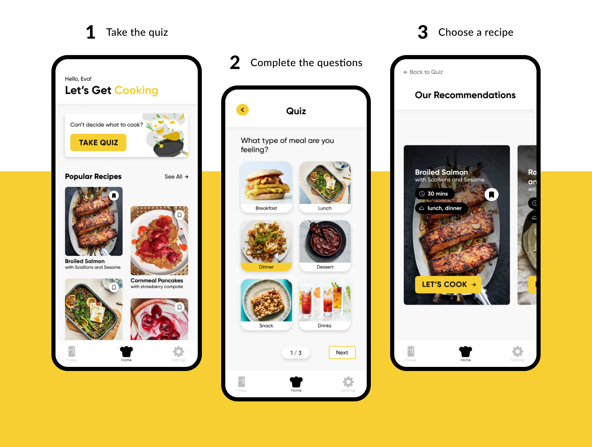
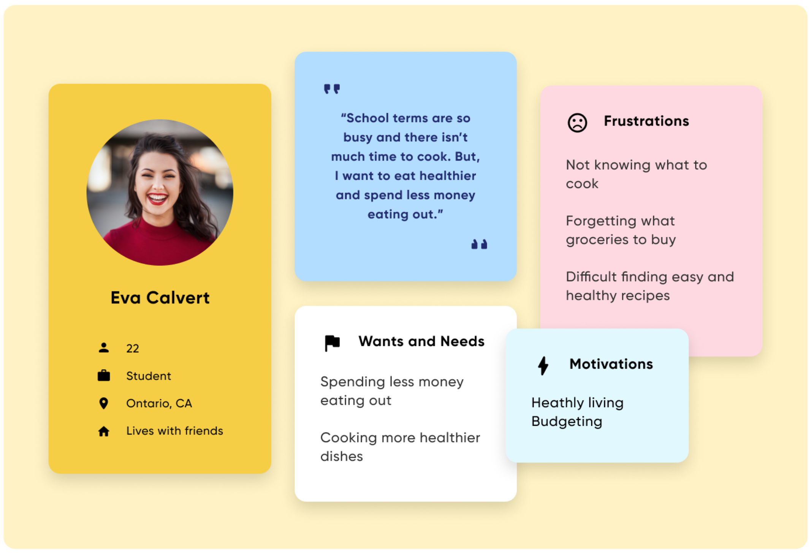

chef Mobile Application
Suggesting recipes based on fridge inventory
Role
Sole UX/UI designer
Timeline
May 2019 - Aug 2020
Tools
Adobe XD, Figma
Context
This idea came to me in early 2019 and has gone through two iterations. All research, designs, and prototyping have been completed by me.
Problem
Many students end up moving out at the beginning of university/college and can have a hard time figuring out what to eat. Buying groceries and cooking is a much cheaper option than eating at restaurants all the time. A problem that I faced was deciding what exactly I should be cooking. I wanted an application that could provide me with recipes depending on what I already had in the fridge. I proposed this idea to some friends and realized that it was a common problem among them.
This app can be personalized depending on diet, cooking duration, meal type, cuisine, and many other factors. Furthermore, it keeps an up to date record of what is in your fridge, which can come in handy during your next grocery run.
Goal
To provide recipes based on fridge inventory and user preferences.
Research
To scope the problem, I created a survey and sent it out to everyone that I knew. The purpose was to obtain a better idea of the audience and their pain points in terms of cooking.
Questions Asked
- How many of your meals are eaten at restaurants vs. cooked by you?
- If you don’t cook much or at all, why is that?
- Do you ever search up recipes to cook?
- Do you ever have trouble thinking of what to cook?
Pain Points
- Cooking takes too much time and effort.
- It’s often difficult to figure out what to make.
Target Users
Individuals looking to save time on cooking, expand their cooking abilities, learn new recipes, save money on meals, and keep track of their fridge inventory.

Journey Map
Version 1
The first design consists of a home screen that immediately displays the questions to generate recipes. The navigation system operates as a horizontal bar at the bottom where the user can access the home screen, fridge, recipes, settings, and add button. The add button allows the user to input new contents in their ‘virtual fridge’ to keep a record.

Version 2
Much of the design and user flow was changed from the first version based on feedback from friends and family. It was decided that the amount of decisions and choices in the home screen were to be reduced so that it was not overwhelming for the user at first glance. The design has been improved to feel cleaner, fresher, and more modern.

Prototype
Visual Guidelines

Reflection and Conclusions
While this project is already on its second version, there is still much to be done. In the future, more research and testing should be implemented to get a better idea of the users. More creative methods should be brainstormed so that assumptions about new technology can be backed up.
This is my first solo project intended to experience and learn more about UX/UI design. There is still a lot to be done but I do not intend for this application to be fully developed. I am happy to say that I learned a lot and improved my skills in design.